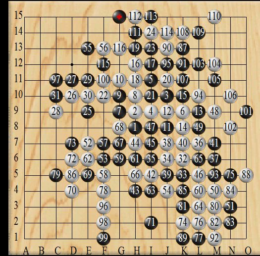

本次比赛于2009年9月12日顺利结束，最后一台分别是戴晓寒vs陈靖，双方选手苦战100多手，最后陈靖在防冲四的时候点偏，最后江苏以微弱比分小负福建队。预祝两队在今后都能越战越强，发挥出更好的水平。

9月12日台次表
福建
一台魏亚舒
二台林金顺
三台谢增忠
四台吴侃
五台陈国贵
六台王谊
七台梁信达
八台黄甸甸
九台戴晓寒
江苏
一台 牛牛
二台 谢呈城
三台 周宏昌
四台 傅亮
五台 戴如周
六台 郭峰
七台 庄敏
八台 康岩
九台 陈靖
大师怎么没上?????? 听说大师风尘仆仆的杀到联众,身披江苏9号战袍.向福建9号选手发出挑战.福建9号说:
你好,我是小天.
!!!! 大师大惊，本来想来切切菜鸟,奈何碰上小天这种级别的强人.哇靠!!!速度闪速度闪，就当走错地方了. 后来呼叫道道赶来救场,哈哈 真太搞笑了 不愧是大师级别的人物 请问,这是不是真的? 可以请小天老师来证实下
楼上描述不正确，是江苏今晚缺人，所以连牛牛都上了，
至于楼上说的避战则是子虚乌有，是道道主动要求的，不是救场
引用：
原文由 没事摆石子玩 发表于 2009-9-13 1:16:50 :大师怎么没上?????? 听说大师风尘仆仆的杀到联众,身披江苏9号战袍.向福建9号选手发出挑战.福建9号说:
你好,我是小天.
!!!! 大师大惊，本来想来切切菜鸟,奈何碰上小天这种级别的强人.哇靠!!!速度闪速度闪，就当走错地方了. 后来呼叫道道赶来救场,哈哈 真太搞笑了 不愧是大师级别的人物 请问,这是不是真的? 可以请小天老师来证实下
你可以这么想，但你恐怕不了解其他情况吧。首先小天作为福建的预备队，而我也是预备队的。小天上次全团赛就没有作为棋手出场，而是作为领队，你难道可以说他为了避战。比赛开始的时候，道道才到，这时1-9号已经开始了，而我这里，才下到5手2打，小天同意我方换人。
输赢更在棋外。
这个112手，晕~~
另外强烈希望能发这次对战的棋局，供人们学习。
最后恭祝这次江苏跟福建友谊赛圆满结束。
 没有看到有点遗憾。貌似楼主把其他棋谱发来看看
没有看到有点遗憾。貌似楼主把其他棋谱发来看看教主加点油